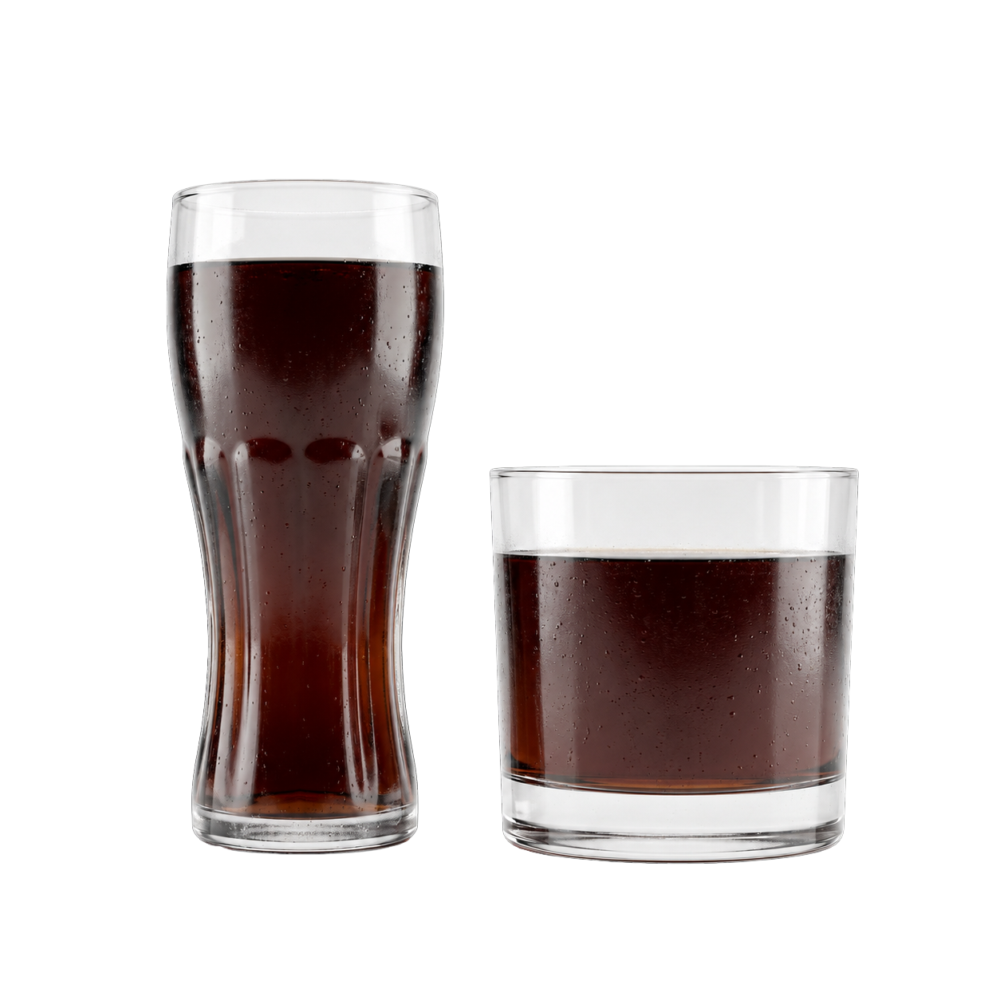
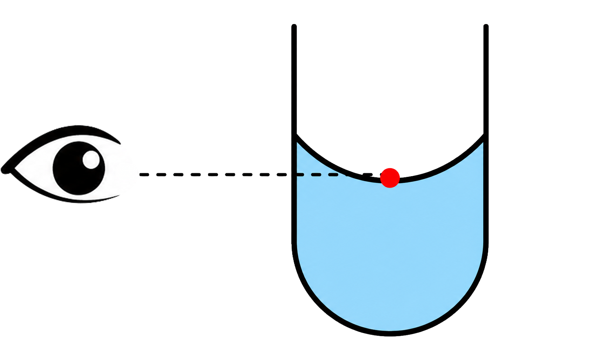
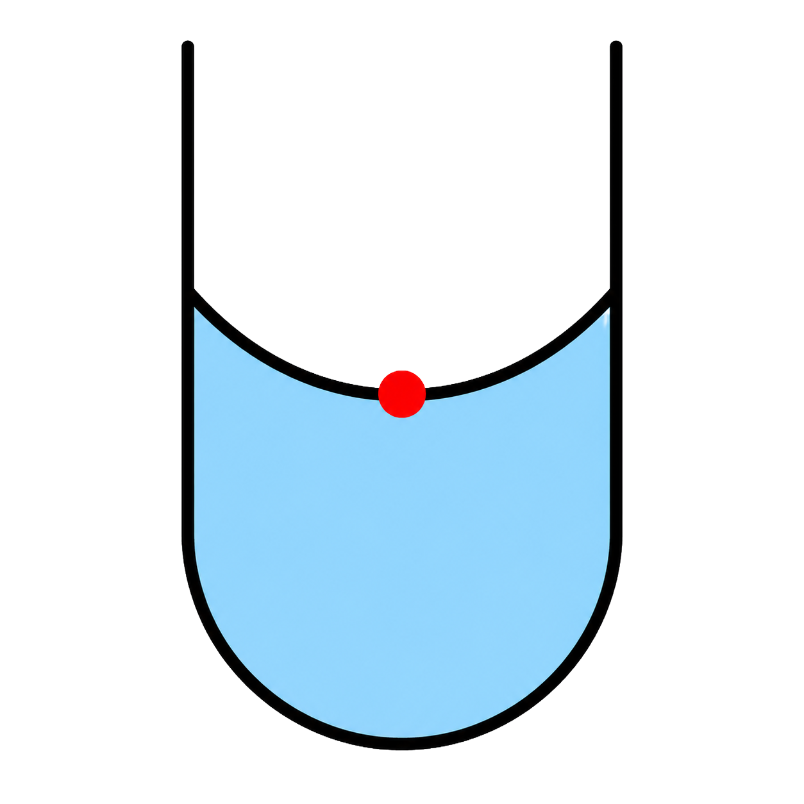
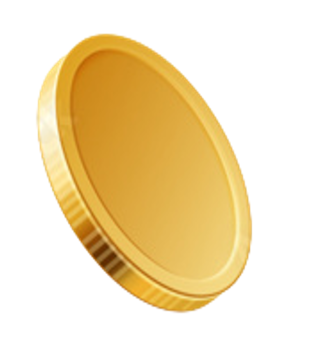
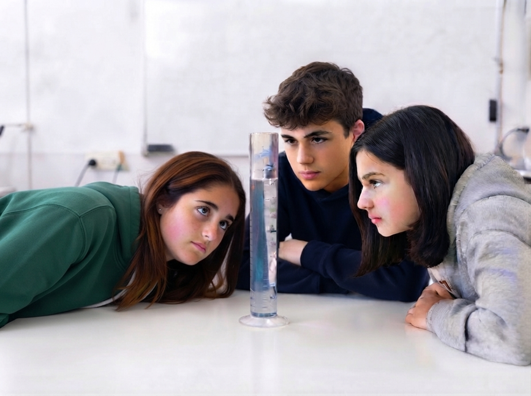
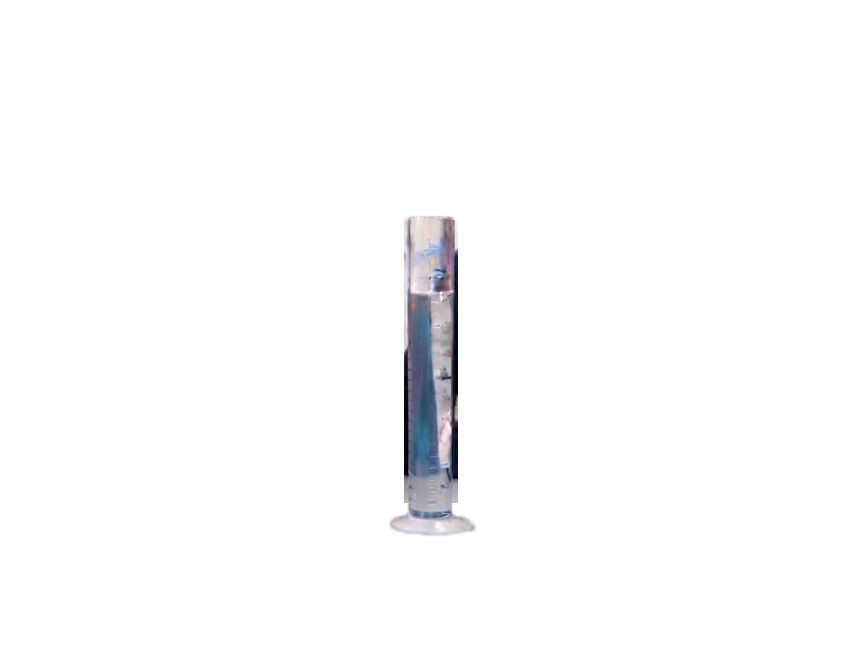
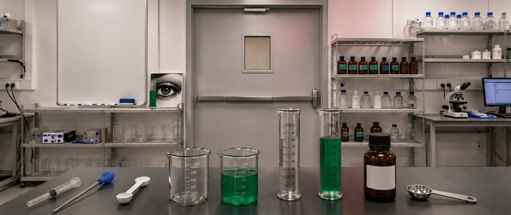

اختاروا من سيرافقكم في هذه الوحدة
اختاروا شخصية

في أي كوب يُشغِل المشروب حيزًا أكبر؟ (أي يحتوي على كمية أكبر من المشروب)
بأي أدوات نقيس حجم السائل؟
قياس حجم السائل يعني قياس كميته. رأينا أن أعيننا قد تخدعنا.
لكي نقيس بدقة – نحتاج إلى الأداة المناسبة.
أمامكم أدوات لقياس كميات صغيرة من السوائل. اضغطوا للتعرّف إليها.
ملعقة قياس طبّية
ماصّة
محقنة
*يمكن أحيانًا قياس نفس الكمية بعدة أدوات. في هذه الحالة نختار وفقًا لمستوى الدقّة المطلوب وهدف الاستخدام.
في جميع الحالات التالية يجب قياس 5 ملل.
اسحبوا كل حالة إلى الأداة الأنسب لها. انتبهوا إلى هدف الاستخدام.
ملعقة قياس طبّية
ماصّة
محقنة
بأي أدوات نقيس حجمًا كبيرًا من السائل؟
بأي أدوات نقيس كميات أكبر من السوائل؟ اضغطوا للتعرّف عليها.
مخبار مدرّج
دورق
*كلما كانت الأداة أكبر – كانت الدقّة أقل، لكنها تستوعب كمية أكبر من السائل.
لنحاول التخمين...
علينا قياس 100 ملل لإجراء تجربة في الصف (وهي كمية تعادل كوب شرب تقريبًا).
أي أداة نختار؟
اضغطوا على الأداة المناسبة.
عملية قياس حجم السائل
تعرّفنا على أدوات القياس، وبقيَ أن نتعلم فقط كيفية استخدامها في عملية قياس علمية.
اختاروا كيف ترغبون في التعلم خلال الدقائق الخمس القادمة:
كيف نقيس حجم السائل بطريقة صحيحة؟
اكشطوا البطاقات بواسطة الفأرة واكتشفوا الأمور المهمة التي يجب القيام بها أثناء القياس.
كيف نقرأ ارتفاع سطح السائل بشكل صحيح؟
نضع أعيننا على مستوى سطح السائل. النظر من الأعلى أو الأسفل قد يؤدي إلى خطأ في القراءة.

إلى ماذا ننظر في المخبار المدرّج؟
يلتصق السائل بجدار الوعاء ويكوّن انحناءً صغيرًا.
نقرأ القياس بحسب أدنى نقطة في الانحناء.

كيف نختار أداة القياس؟
نختار الأداة بحسب:
المجال - كمية السائل التي تستوعبها
الدقّة - مدى تقارب التدريجات
السياق - هدف القياس
بعد ذلك، نسكب السائل داخلها

يظهر في الصورة ثلاثة طلاب ومخبار مدرّج يحتوي على ماء.
من يقرأ ارتفاع السائل بالطريقة الصحيحة؟


كيف نقيس حجم السائل بطريقة صحيحة؟
اكشطوا البطاقات بواسطة الفأرة واكتشفوا الأمور المهمة التي يجب القيام بها أثناء القياس.
كيف نعرف أن القياس موثوق؟
إذا كانت نتائج القياسات الثلاثة متقاربة، فالقياس موثوق.
كم مرة نقيس؟
لكي يكون القياس موثوقًا، نقيس 3 مرات ونحسب المعدل.
ما هي وحدات قياس حجم السائل؟
حجم السائل هو الحيز الذي يُشغِله السائل. وحدات قياس الحجم هي: مليلتر (ملل)، لتر، سنتيمتر مكعب، متر مكعب.
ماذا تعلّمنا؟
أكملوا الجمل. انتبهوا، هذه المرة لا يوجد تلميح...
تجوّلوا بالفأرة في المختبر وجِدوا مبادئ القياس الستة.
بهذه الطريقة فقط ستتمكنون من الخروج.

| رقم القياس | النتيجة |
|---|---|
| 1 | 49 |
| 2 | 50 |
| 3 | 51 |
المبادئ التي تم إيجادها
لكي تخرجوا من الغرفة، أكملوا الجمل.
انتبهوا، هذه المرة لا يوجد تلميح...
ماذا تعلّمنا؟
رتبوا مراحل عملية قياس حجم السائل بحسب الترتيب
ماذا بقيَ عالقًا في عقولنا؟
سؤال بسيط للإحماء قبل أن نبدأ التمرين
دواء للطفل
يحتاج طفل مريض بعمر 6 أشهر إلى دواء بجرعة 2 ملل.
أي أداة تختارون؟